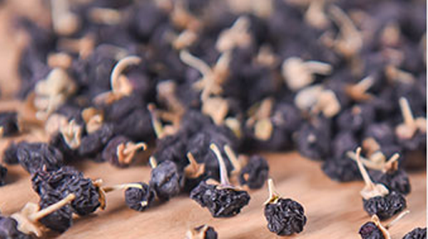

黑枸杞是很好的滋补的食材，黑枸杞的食用是需要适量的，如果黑枸杞一天的量用多了也是对身体有害的。黑枸杞喝多了对身体的害处有，导致心烦气躁，出现上火口舌生疮、导致腹泻、引起眼睛发胀发红。身上有伤口的喝黑枸杞是会引起伤口发炎的。
1、 导致心烦气躁
黑枸杞喝多了是会引起心烦气躁的，这是因为黑枸杞是会引起上火的。女性本身就容易出现阴虚火旺和肝火旺盛，在喝多了黑枸杞是会引起心烦气躁的。特别是更年期的朋友，因为体内激素本身的不稳定喝多了黑枸杞是会引起心情烦躁，心理感觉乱糟糟的。
2、 口舌生疮

黑枸杞有着助阳的功效，黑枸杞喝多了是会引起口舌生疮的，特别是本身体质偏热性的，如果长期饮用黑枸杞泡茶是会多次引起口舌生疮的。和口舌生疮同时引起的还会有耳朵根部的疼痛，因为身体热性严重引起的口舌生疮是会出现反复生疮，
3、 腹泻
黑枸杞有着改善身体的循环排毒的作用，一次性吃多了黑枸杞是会引起腹泻的。像脾胃虚寒的患者吃多了黑枸杞也容易引起腹泻。所以黑枸杞一次性是不能吃多的，吃多了是很容易导致腹泻。
4、 眼睛发红
黑枸杞是有着保护眼睛明目的作用，但是一次性吃多了黑枸杞是会引起上火然后引起眼睛红肿、干涩、疼痛。像因为病毒感染引起的疾病，如红眼病的情况是最好不要喝黑枸杞的，因为黑枸杞会让外感邪气严重，加重病情。
5、 伤口发炎
黑枸杞有助阳的功效，如果手术过后是最好不要使用黑枸杞来滋补的，这是因为黑枸杞助阳的功力是会引起伤口发炎。手术过后如果随意使用滋补药物多会引起伤口发炎，所以术后的滋补需要谨慎。
黑枸杞虽然有滋补的功效，但是因为黑枸杞一天是不能吃太多的，并且不建议长期食用黑枸杞。黑枸杞一天吃的量最好要在10颗以内，每次的量不能太多。
结语：通过上文的介绍，相信大家都了解了关于黑枸杞喝多了有坏处吗的答案，是有的可能会引起腹泻和上火，严重的还会导致身体伤口发炎。